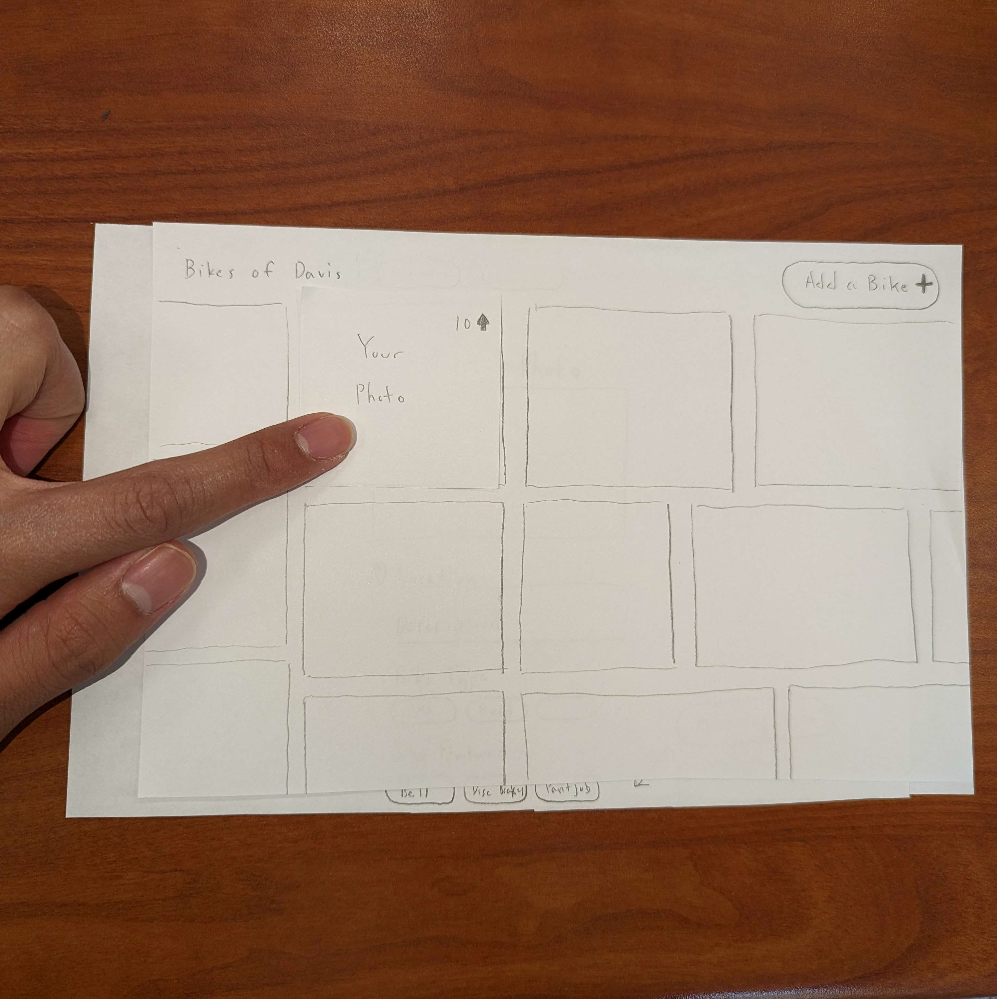

Paper Prototype
Overall, getting to actually build a physical prototype of my project really helped me get a better picture of what direction to take my project in and any issues there might be. Having a classmate as another pair of eyes to go over my prototype and point out points of confusion and gaps in logic was really helpful for making my project flow more logically. In terms of changes I might make, I think a filtering option for photos might be a good idea to help users sort, and I may try to place the "Add" button for my project in a more central location for users.